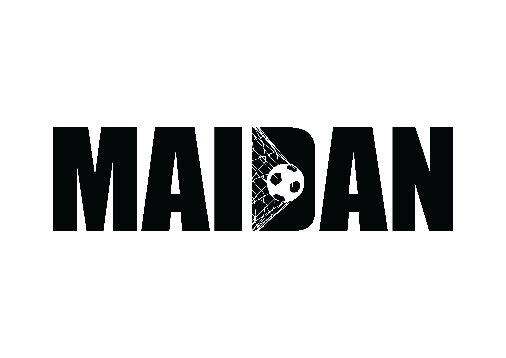
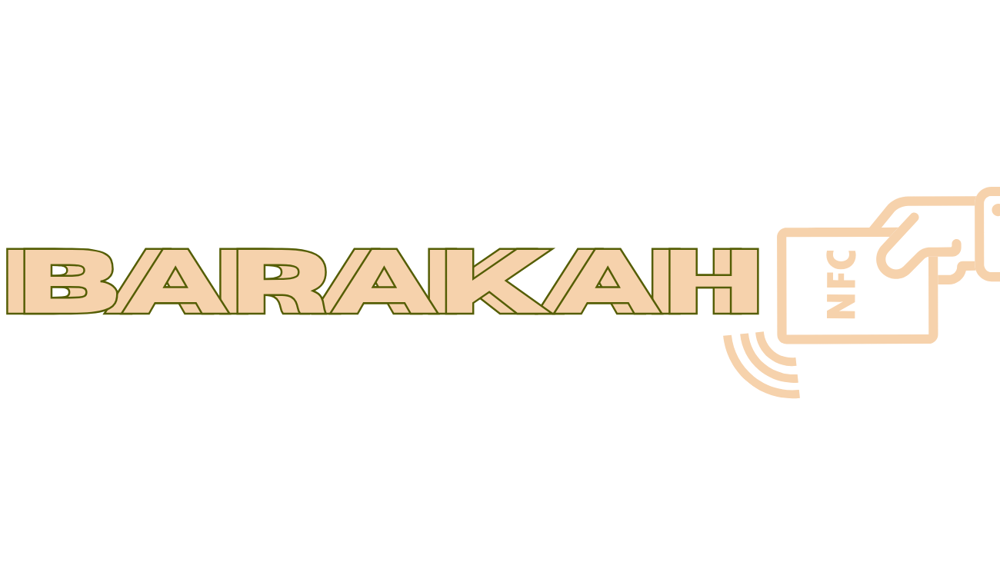
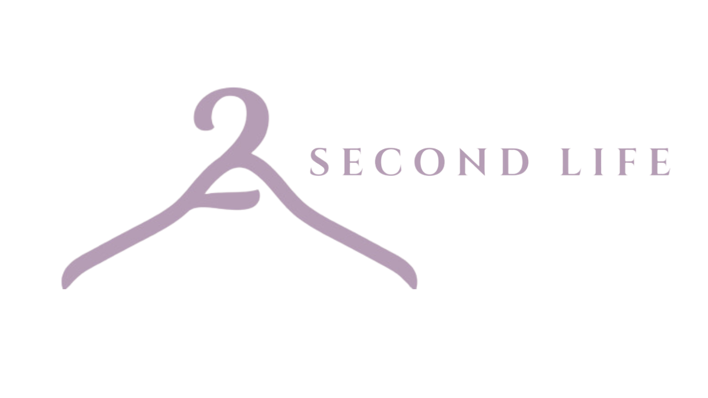

Hello, I'm Dimah Aloufi
Beyond the lines of code lies a vision, and behind every project stands a passion to create, innovate, and inspire!
Who is Dimah?
I am from Taif and a passionate Bachelor's student in Software Engineering at the University of Jeddah.
My journey began on August 31, 2021, and I am set to graduate in 2026, carrying with me a deep sense of purpose—to contribute to
the advancement of technology in my homeland.
Technology, to me, is more than just code—it’s a bridge to a better future.
It’s about solving real-world challenges, pushing creative boundaries, and driving meaningful innovation that can impact lives.
But beyond my passion for technology, my greatest source of strength and inspiration is my family and my country.
Saudi Arabia is not just where I live—it’s who I am.
I dream of using my skills to contribute to its vision, to give back to the place that shaped me, and to make my family proud with every step I take.
For me, success is not just personal—it’s about lifting others, serving my nation, and building a future that honors my roots.
My Aims & Objectives
- Continuous Learning:Stay ahead with the latest technologies and trends
- Building Impactful Solutions:Use coding & creativity to solve real-world problems
- Supporting Vision 2030:Contribute to Saudi Arabia’s technological transformation
My Projects
Here are some of the projects I’ve worked on:
Projects Overview
Maidan - ميدان

Maidan - ميدان
Web Development
A cutting-edge website designed to empower administrators and the Ministry of Sport with seamless
modern stadium management solutions—paving the way for a world-class experience as Saudi Arabia prepares to host the 2034 World Cup
View on GitHub
Skills
HTML5
CSS3
JavaScript
Node.js
MySQL
GitHub
BARAKAH - بركة

BARAKAH - بركة
IoT
A smart food management system that uses NFC technology and real-time sensors to monitor food expiration
dates and storage conditions, reducing waste
View a Demo Video
Skills
Near-field Communication (NFC)
DHT Sensor
ESP32 Microcontrollers
IFTTT
ThingSpeak
KidCoin

KidCoin
Mobile App Development
An interactive app that bridges the financial literacy gap by teaching children essential money management
skills through engaging activities, empowering them to budget, save, and spend wisely
View on GitHub
Skills
Flutter
Dart
Firebase
Agile
GitHub
JIRA
Slack
Unified Modeling Language (UML)
Manual Testing
Second Life

Second Life
Project Management
A platform for donating and selling unused clothes in Jeddah, with a portion of profits supporting charities.
It promotes sustainability while fostering community engagement and economic value
View a Presintaion Slides
Skills
Financial Planning & Cost Estimation
Risk Management
Project Scheduling
Scope Management
Business Analysis